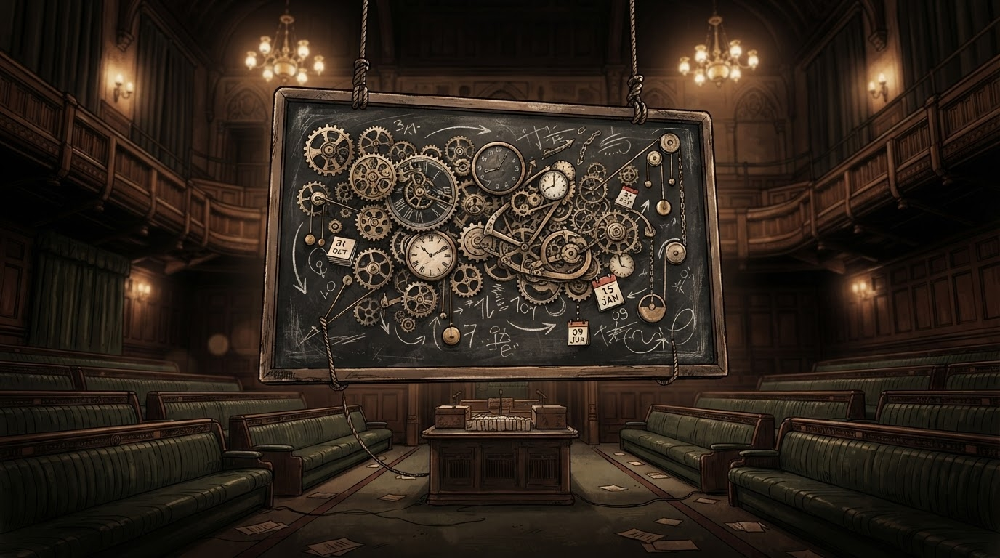

Ekuacioni kombëtar, ende i pazgjidhur
Politikë • Kosova
Analisti zbulon: konstituimi është "ekuacion" — matematikanët e Kuvendit ende kërkojnë të panjohurën
16 shtatori u quajt zyrtarisht "pjesë e ekuacionit" — redaksia jonë e zgjidhi menjëherë: rezultati është, si gjithmonë, 1+1=3.